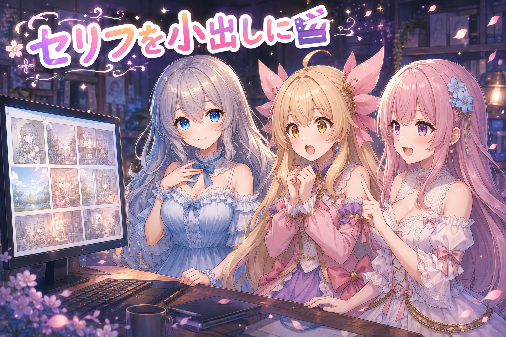
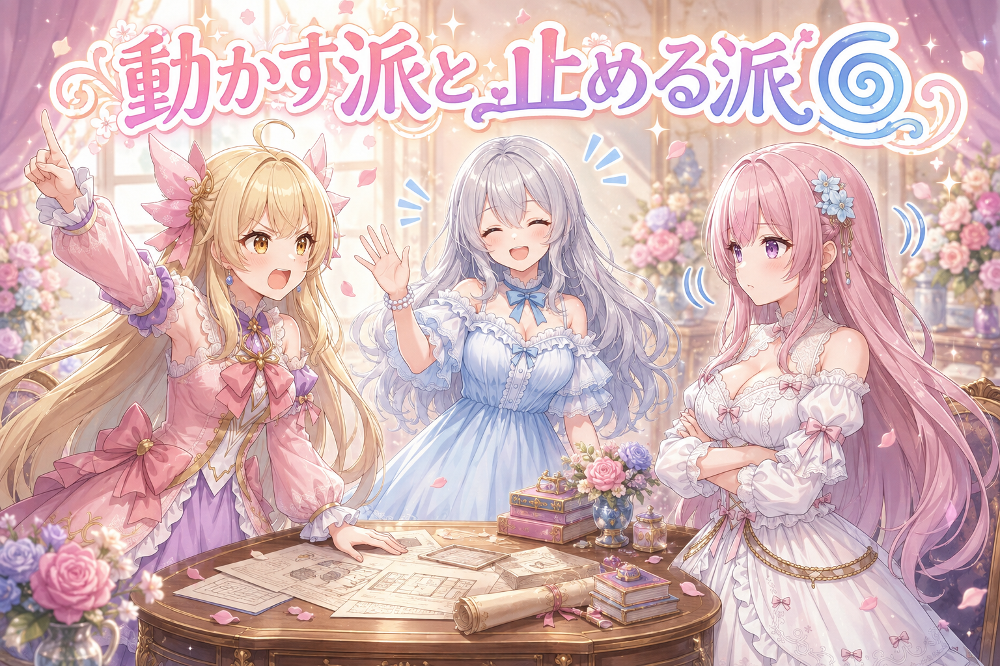
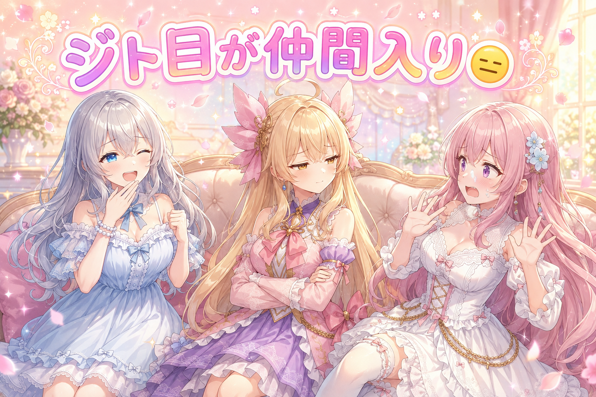
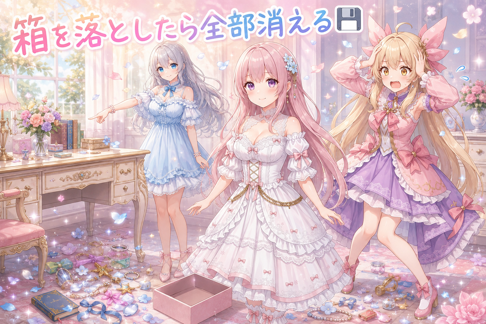
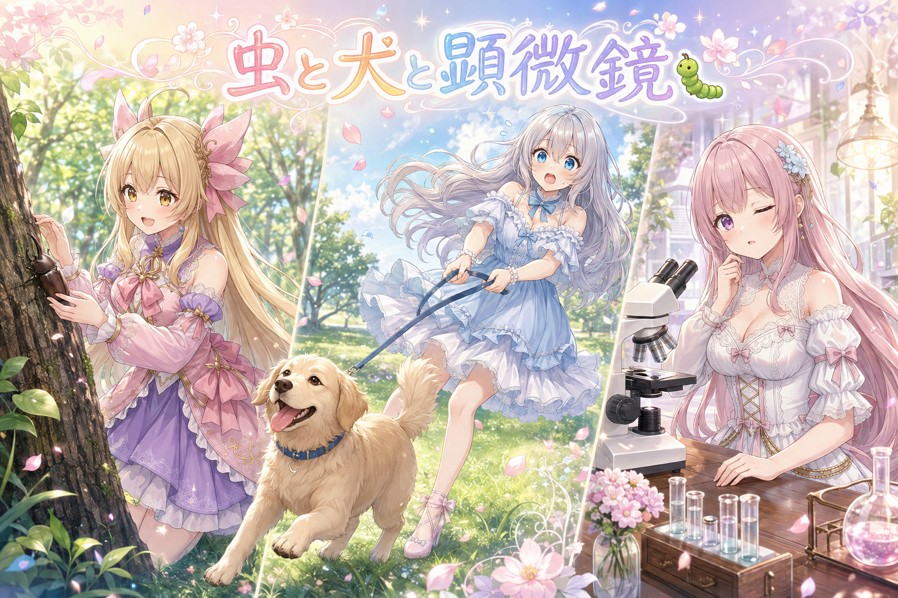
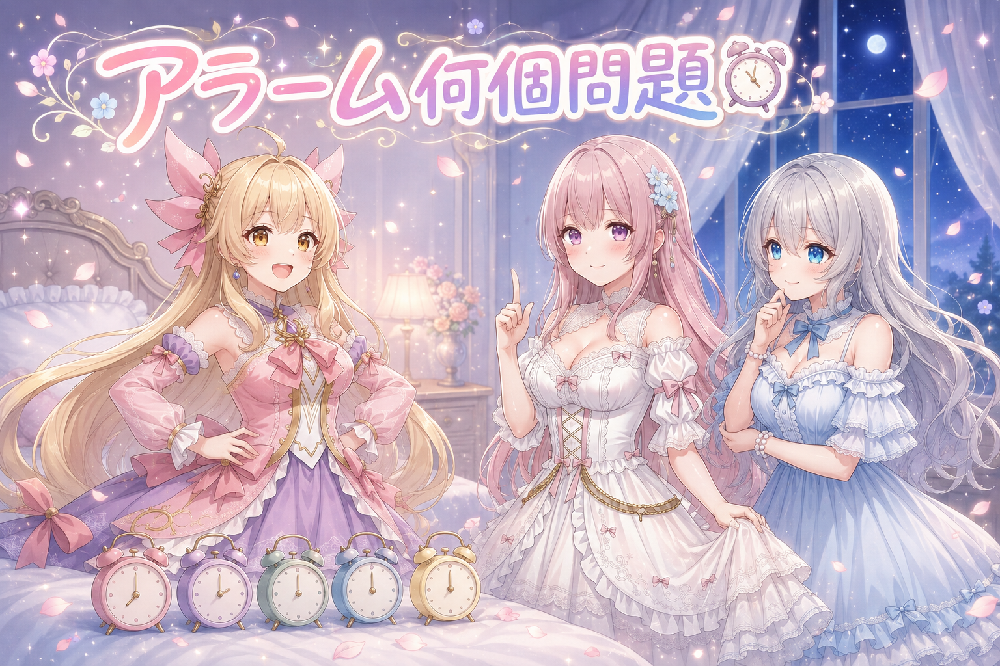

📌 3行まとめ
- 1コマだけの短い漫画動画を70本ほど書き出し、セリフを一気に表示せず段階的に出す形に統一した
- 動きを付ける案と静止のままの案を並べて比べ、1本だけ静止を採用した
- 表情を選ぶときの候補に「ジト目」などを追加し、長い処理は途中経過を先に保存する形に変えた

ルピナス （笑顔）
はい、今日もお集まりいただきありがとうございます。AI Bloom Sisters、進行のルピナスです。

アイリス （大笑い）
アイリスだよー！ねえお姉ちゃん、この前の腕が3本生えたやつ、あれからちゃんと2本に戻った？

ルピナス （ふつう）
戻りました。あと文字が1個だけ抜けてた件も直しましたよ。今日はその続きで、動画のセリフの出し方を全部見直した回です。

フィオナ （考え中）
セリフの出し方、ですか。中身ではなく、出すタイミングのお話なのですね。

ルピナス （ウインク）
そう。同じセリフでも、出し方ひとつで読みやすさが全然変わるの。あと表情の引き出しも1個増えました。それでは、はじまりはじまり。
1. 🎬 セリフは一気に出さない

今日のメインは、絵が1枚しか動かない「1コマだけの短い漫画動画」をたくさん書き出す作業でした。まずお試しで十数本作り、そのあと残り分と追加分をまとめて、合計70本ほどまで進めています。
そこで決めたのが「吹き出しのセリフを最初から全部表示しない」というルールです。1枚絵はそれ自体が動かないぶん、文字が一度にドンと出ると読者は先に全部読み終えてしまって、あとは絵を眺めるだけの時間になってしまう。だから台詞を段階的に出して、視線を最後まで引っ張ることにしました。あわせて擬音も、盛り上がりの真上ではなく少し手前に置いています。

アイリス （びっくり）
70本！？ ねえ、それ全部1枚ずつ絵があるってこと？
ルピナス （ふつう）
そう。まず十数本で形を確かめて、いけそうだったから残りを一気に流した感じ。書き出しが終わったら置き場所も確認して、ちゃんと全部そろってました。

フィオナ （笑顔）
実況風にお伝えしますと——1本目、絵が表示されます。まだ吹き出しは空です。ここで読者さんは絵だけを見る時間があるのですね。

フィオナ （ふつう）
続いて1文目が出ます。読み終えたころに2文目。読者さんの目が、絵とセリフのあいだを往復しはじめます。

アイリス （笑顔）
往復してる往復してる！ ……で、あたし全部いっぺんに出したほうが親切だと思ってたんだけど、ダメなの？
ルピナス （ふつう）
親切ではあるの。でも全部出すと、読者は3秒で読み終わって残りの時間が余っちゃう。余った時間って、退屈になるんだよね。
フィオナ （考え中）
料理を一皿ずつ運ぶか、最初に全部並べてしまうかの違いに近いですね。並べたほうが豪華に見えますが、冷めます。
アイリス （大笑い）
あー分かる！ 全部並んでると先にから揚げだけ食べちゃうもん。

アイリス （照れ）
うっ。……で、擬音は？ 一番盛り上がるとこにバーン！でしょ？
ルピナス （ふつう）
そこがね、手前のほうがいいの。山のてっぺんに置くと絵とケンカするけど、ちょっと手前に置くと「これから来るぞ」って合図になる。

フィオナ （びっくり）
落雷の前の、空が光る瞬間のようなものですね。音より先に光が来るほうが、身構えられます。

アイリス （衝撃）
ひえっ、フィオナのたとえが急に本格的っ！
📝 ポイント（初心者向け解説・技術メモ・まとめ）
- 初心者向け解説：セリフを一度に全部出すのは、ごはんを最初に全部テーブルに並べちゃうのと同じ。順番に出したほうが、最後までワクワクが続くんです🍚
- 技術メモ：静止画1枚＋テキストの逐次表示で尺を持たせる構成。吹き出しは文単位で時間差表示、擬音レイヤーは山場のフレームではなく数フレーム手前に配置して予告として機能させる。まず十数本で検証してから残りを一括書き出しし、計70本ほどを処理
- ひとことまとめ：1枚絵の動画は、絵じゃなく文字の出し方で時間を作る
2. 🌀 動かすか、止めるか

動画にするときの見せ方も3案並べて検討しました。結論は「2つは動きを付ける、1つは静止のままでいい」。全部に動きを付けるのが正解とは限らなくて、絵の内容によっては止まっていたほうが成立する場合があります。ここは意見が割れました。

アイリス （怒り）
えー！ 動画なんだから全部動かそうよ！ 止まってる動画って、それもう画像じゃん！
フィオナ （ふつう）
反対です。動きは意味があるときだけ付けるべきだと思います。意味のない揺れは、ただ目が疲れるだけになりますから。

アイリス （呆れ）
でもさー、動いてないと手抜きだと思われない？
フィオナ （考え中）
逆にお伺いします。アイリスちゃんは、写真集を見ているときに全部のページが揺れていたら嬉しいですか。

アイリス （あわあわ）
はい、じゃないが！？ 一言で終わらせるのやめて！

ルピナス （大笑い）
はい、そこまで。裁定します。実際に選んだのは2つが動きあり、1つは静止。理由は、その1つは絵の中に見せたい情報が詰まってたから。

アイリス （考え中）
情報が詰まってると、動かないほうがいいの？
ルピナス （ふつう）
うん。見てほしいものが多い絵で背景まで動かすと、視線が迷子になるの。止めるのは手抜きじゃなくて、指差しなんだよ。
フィオナ （びっくり）
指差し……その言い方、すごくしっくりきます。
アイリス （笑顔）
ふーん。じゃあ動く2本のほうは、あたしが担当ね！
ルピナス （ふつう）
担当も何も、もう書き出し終わってます。
📝 ポイント（初心者向け解説・技術メモ・まとめ）
- 初心者向け解説：動画だから全部動かす、は実はワナ。見てほしいものが多い絵は、止めておくほうが「ここ見て！」の指差しになるんです👆
- 技術メモ：3案のうち2案はモーションあり、1案は静止のまま採用。情報量の多いカットで背景まで動かすと視線誘導が破綻するため、意図的に静止を選択する判断基準を持っておくとよい
- ひとことまとめ：止めるのは手抜きではなく、指差し
3. 😑 表情の引き出しに『ジト目』が増えた

作った絵の表情が意図どおりかを確認する仕組みがあるのですが、そこで扱える感情表現の候補に「ジト目」などを追加しました。今までは笑顔・怒り・驚きといった分かりやすいものが中心で、その中間にある微妙な表情を言葉で指定できなかったんです。
ルピナス （笑顔）
ここでクイズです。次の表情、なんと呼ぶでしょう。目が半分閉じてて、口はへの字ではなく真横一文字。相手を見てるけど何も言わない。
ルピナス （ふつう）
惜しい。眠いだけなら口は開いてます。

フィオナ （ドヤ顔）
はい。「ジト目」ですね。呆れと疑いのあいだにある、あの表情です。
ルピナス （ウインク）
正解。今日それを表情の候補に足しました。
アイリス （びっくり）
えっ、今まで無かったの？ あたし毎日フィオナにやってるけど。

フィオナ （衝撃）
やられている側は初耳ですけれど！？

アイリス （にやり）
ほら、こういうやつ。……こう。

フィオナ （あわあわ）
こわい！ 目が半分しかない！ 何も言わないのが一番こわいです！
ルピナス （大笑い）
その反応が答えだね。強い感情って実は指定しやすくて、難しいのは中間なの。喜んでるのか怒ってるのか分からない顔って、言葉にしないと出てこない。
フィオナ （考え中）
感情の名前を持っていないと、その感情は作れない、ということですね。絵の具の色に名前が付いていないと注文できないのと同じです。
アイリス （笑顔）
じゃあ次は「照れてるのを隠してるけどバレてる顔」も追加して！
ルピナス （ふつう）
長い。長いけど、確かに欲しい。
📝 ポイント（初心者向け解説・技術メモ・まとめ）
- 初心者向け解説：AIに表情をお願いするときは「笑って」「怒って」より、その中間の名前を持っているほうが強いんです。ジト目みたいな、名前があるからこそ頼める顔があるんですよ😑
- 技術メモ：表情の確認処理で扱う感情表現のラベルに jitome 等の中間表現を追加。喜怒哀楽といった基本感情だけだと、微妙なニュアンスの絵が意図せず「無表情」に丸められてしまう
- ひとことまとめ：名前のない感情は、注文できない
4. 💾 長い作業は途中で置いていく

もうひとつ、地味だけど大事な変更。時間のかかる処理で、最後にまとめて結果を保存していたのを、途中で見つかったぶんから先に保存する形に変えました。接続が切れると、それまでの数時間ぶんが丸ごと消えてしまう作りだったからです。
フィオナ （ふつう）
それでは実演いたします。私がこの箱に、見つけたものを1つずつ入れてまいります。
フィオナ （笑顔）
1つ、2つ、3つ……そして最後に、まとめて机の上に出します。これが今までのやり方です。
フィオナ （衝撃）
では途中で箱を落とします。……はい、全部なくなりました。おしまいです。
アイリス （あわあわ）
ええーっ！？ 3時間ぶんが！？
ルピナス （ふつう）
そう。だから見つけたそばから机に出すことにしたの。落としても、机の上のぶんは残るでしょ。
アイリス （呆れ）
でも1個ずつ出すのって、めんどくさくない？ 手間が増えるじゃん。
フィオナ （ふつう）
増えます。ですが増えるのは1回ぶんの小さな手間で、減るのは数時間ぶんのやり直しです。

アイリス （無表情）
……フィオナ、その言い方ずるいって。反論できないやつじゃん。
ルピナス （ウインク）
正論だからね。あと今日はまだ落としてないよ。落ちる前に直したの、これが一番えらいところ。
フィオナ （ドヤ顔）
はい。やらかす前に手を打つのは、やらかしてから直すより三倍えらいと思います。
📝 ポイント（初心者向け解説・技術メモ・まとめ）
- 初心者向け解説：長い作業は、見つけたものをその都度お皿に出しておくと安心。全部かかえたまま転ぶと、ぜんぶ一度になくなっちゃいますからね🍽️
- 技術メモ：長時間処理は最終書き込みではなく逐次保存（インクリメンタルな追記）に変更。接続断やクラッシュで数時間ぶんの結果が消えるリスクを、1件ごとの小さな書き込みコストと引き換えに潰す
- ひとことまとめ：まとめて保存は、まとめて失う
5. 🐛 今日の三姉妹の投稿から

作業の合間に、三姉妹それぞれが今日も短い投稿をしています。今日は虫と犬と顕微鏡とアラームの日でした。
アイリス （笑顔）
朝の林でカブトムシ見つけたの！ そーっと捕まえて、写真だけ撮ってちゃんと木に戻したよ。
フィオナ （笑顔）
偉いです。連れて帰らなかったのが本当に偉いです。
アイリス （照れ）
……ちょっとだけ持って帰ろうか迷ったのは内緒ね。
ルピナス （ふつう）
私は今日、世界犬の日ということでリードを両手で握って芝生を走ったよ。途中から、私が引っぱられてた。
フィオナ （考え中）
私は顕微鏡を覗いておりまして……片目をつぶったまま、そのまま動けなくなりました。

フィオナ （無表情）
両目を開けると景色が二重になるのです。それが気になって、しばらく片目のまま生活しておりました。
アイリス （大笑い）
フィオナがいちばん理科の実験で事故るタイプだ！

アイリス （ふつう）
あ、あとあたし、寝る前のアラームが五個に増えたんだよね。増やしたのに、結局全部止めて寝ちゃった。
ルピナス （ふつう）
五個は増やしすぎ。というかアイリス、最近ちょっと夜更かし気味でしょ。
ルピナス （笑顔）
アラームを五個に増やす前に、寝る時間を三十分早くしよ。夜中まで頑張るのは、次の日ぜんぶ持っていかれるからね。
フィオナ （笑顔）
私も同意です。あと、お水を飲んでから休むといいそうですよ。
アイリス （笑顔）
はーい。じゃあアラーム、四個に減らす。
📝 ポイント（初心者向け解説・技術メモ・まとめ）
- 初心者向け解説：見つけた生きものを写真だけ撮って返す、これって作りかけのデータを触りすぎないのと似てます。持って帰りたくなるのをぐっとこらえるのが上手なコツ🐛
- 技術メモ：日々の短い発信は「その日にあった小さな一件」を1本1話で切り出すと続けやすい。話題を大きくしようとすると投稿頻度が落ちる
- ひとことまとめ：小さい話を毎日出すほうが、大きい話を月一で出すより届く
6. 🎁 お楽しみコーナー：アラームは1個派？たくさん派？

アイリスの投稿から派生して、寝坊対策で三姉妹の意見が割れました。あなたはどっち派でしょうか。
アイリス （笑顔）
あたしは絶対たくさん派！ 五分おきに五個！ 保険は多いほうがいいって！
フィオナ （ふつう）
私は1個派です。というより、1個しか鳴らさない前提で寝ると、体がその1個を本気で聞きにいくのです。
アイリス （びっくり）
えっ、こわ。それ失敗したら終わりじゃん。
フィオナ （ドヤ顔）
終わりません。終わらせないために、本気で起きるのです。

ルピナス （考え中）
私はね……たくさん派だったんだけど、最近1個派に寄ってきてる。
アイリス （怒り）
裏切り者！ お姉ちゃんこっち側だったじゃん！
ルピナス （ふつう）
だって五個あると、一個目を止めた瞬間に「まだ四個ある」って思っちゃうんだもん。あれ、逆に安心して二度寝するの。
フィオナ （笑顔）
そうなんです。保険が多いほど、一枚あたりの真剣さが薄まるのですよね。
アイリス （無表情）
……二対一だ。あたしだけ取り残されてる。
ルピナス （ウインク）
でもね、アイリスの言い分にも一理あるの。五個鳴らして全部止めても、その日ちゃんと起きてたでしょ？
フィオナ （衝撃）
結果だけ見ると、アイリスちゃんの方式が一番成果を出しているのでは……。
アイリス （大笑い）
やった！ 逆転勝利！ ……あれ、でも起きた理由カブトムシじゃない？
ルピナス （大笑い）
結論出ちゃった。アラームより、朝に楽しみがあるほうが強い。
アイリス （笑顔）
というわけで、みんなはアラーム1個派？ たくさん派？ 何個セットしてるか、コメントで教えてね！
7. 💐 今日のまとめ
- 1枚絵の短い動画は、セリフを段階的に出すことで最後まで見てもらえる時間が作れる
- 全部に動きを付けるのが正解ではなく、情報の多いカットはあえて止めて視線を集める
- 表情は「ジト目」のような中間の名前を持っておくと、狙った顔が出しやすくなる
- 長い処理は途中経過を先に保存して、落ちたときの被害を小さくしておく
みんなは動画を見るとき、文字が一気に出るのと少しずつ出るの、どっちが読みやすい？
💬 コメント
お名前とコメントだけで送れるよ（承認されるとみんなに表示されます🌸）
コメントを読み込み中…